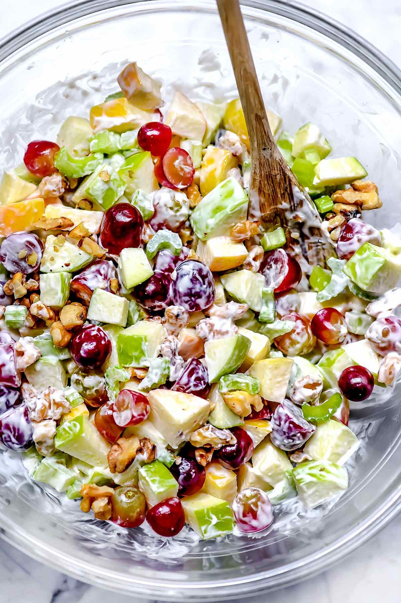

Waldorf Salad

Description
This Waldorf salad recipe is delicious, and you can vary the ingredients to your preference. Try adding diced, roasted chicken to make this salad a meal!
Ingredients
- Half cup mayonnaise
- 1 tablespoon white sugar
- 1 teaspoon lemon juice
- One-eighth teaspoon salt
- 3 apples -- peeled, cored, and chopped
- 1 cup thinly sliced celery
- Half cup chopped walnuts
- Half cup raisins (Optional)
Steps
- Place bananas, milk, peanut butter, honey, and ice cubes in a blender
- Blend until smooth, about 30 seconds.
- Enjoy!!